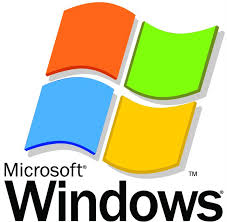
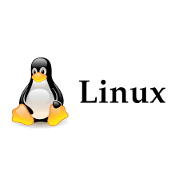
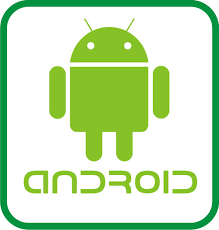
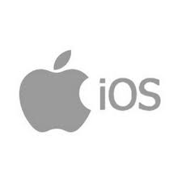

| SISTEMAS OPERATIVOS |
 |
 |
.jpg) |
 |
 |
Microsoft Windows es una serie de sistemas operativos con interfaz gráfica (GUI) desarrollada por Microsoft desde 1985. Domina el mercado de PC con versiones clave como Windows 7, 10 y el actual Windows 11, optimizados para uso doméstico, profesional y servidores. Se caracteriza por su facilidad de uso, gestión de archivos y compatibilidad de software. |
Linux es un sistema operativo de código abierto, gratuito y tipo Unix, conocido por su estabilidad, seguridad y flexibilidad. Funciona mediante un núcleo (kernel) que gestiona el hardware, mientras que el usuario interactúa a través de varias distribuciones (distros) como Ubuntu, Debian o Fedora, adaptadas a diversos entornos, desde servidores y superordenadores hasta ordenadores personales y dispositivos móviles |
macOS es el sistema operativo de Apple para ordenadores Mac, reconocido por su interfaz intuitiva, estabilidad y alta integración con el ecosistema Apple (iPhone, iPad). Las versiones más recientes, como macOS Sonoma (14) y macOS Sequoia (15), ofrecen seguridad avanzada, rendimiento optimizado y funciones de inteligencia artificial. |
Android es el sistema operativo móvil más utilizado del mundo, basado en el núcleo Linux y desarrollado por Google, enfocado principalmente en dispositivos de pantalla táctil como smartphones y tablets. Es de código abierto, lo que permite personalización por fabricantes, y cuenta con un amplio ecosistema de aplicaciones en la Google Play Store. |
iOS es el sistema operativo móvil de Apple, exclusivo para sus dispositivos como iPhone e iPad. Conocido por su alta seguridad, estabilidad, interfaz intuitiva y actualizaciones constantes, este sistema cerrado ofrece un ecosistema integrado con iCloud y la App Store. Es el segundo sistema más popular, enfocado en el alto rendimiento y la experiencia de usuario. |